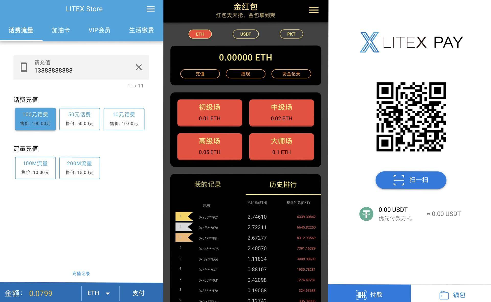

LITEX 白皮书更新 & LDC 启航计划
各位 LITEX 社区小伙伴们：
在大家的关注下，LITEX 已经走过了近两年的时间。两年来，我们进行了很多落地的探索，包括对东南亚、中亚等地加密货币作为新兴支付基础设施的调研，以及对以太坊生态中 Dapp 利用 Layer 2 技术进行加速的实践(pkt.red)，以及最近获得了行业内很多认可的 LITEX 商城(litex.store)。
接下来将要发布的 LITEX Pay 会是大家近期看到的最接地气的重量级产品，目前已经完成业务闭环，进入了最后的测试完善阶段，敬请期待。

为了支撑多种多样的应用场景，LITEX 的架构和理念一直在演进，我们对行业的理解也在不断加深。回过头来，很多设计和理念已经与出发时有了差别，因此我们重新整理了对 LITEX 的定位和规划以及目前 LITEX 的产品技术体系，对白皮书做了一次比较大的更新。在这次更新里，大家可以感受到这一年多来 LITEX 对区块链行业落地的探索和反思，也可以了解到 LITEX 框架最新的产品理念和设计细节，我们也希望这一版白皮书中提出的一些实际场景和问题以及对应的解决方案能够引发大家对区块链落地方向的畅想和探讨。
另外，这次发布的版本是用于社区意见征集的预览版，希望大家多提意见，我们会对白皮书不断进行修订和完善，借助社区的力量一起让
LITEX 在区块链落地的路上走得更好。
新版白皮书地址：https://litex.io/LITEX_WP_CN_NEW.pdf
另一方面，从节点计划开始以来，我们一直在实战环境下对 LDC (LITEX Data Chain) 测试链进行适配和调整，目前 LITEX Store 已经成功运行在 LDC 测试网上，接下来的 LITEX Pay Beta 也已经完成了业务闭环，打通了线下的加密货币 Layer 2 支付通道。目前的 LDC 的设计方案已经达到了支撑 LITEX 框架的标准。
为了 LDC 正式运行时共识节点和验证节点能够更加安全和便利地进行 Staking，我们正式开启 LXT
迁移计划，将以太坊上 ERC-20 的 LXT 代币向 LDC 的 ERC-20 合约逐步迁移，摆脱对以太主网的依赖，实现 LDC 上的生态闭环。